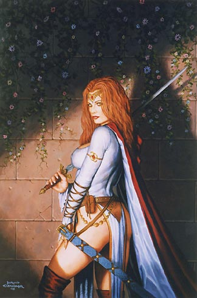

Forums galactiques > Taverne galactique : lieu de discussion informel > L'Ombre Propice
Pages : 1 2 ... 32 33 34 ... 46 47
| Anko Réputation à la taverne : 717  23/05 ETU 19:00 | Score : 0 Détails "Ah, non Hinata, c'est Aerÿnn, pas Wolverine, excuse la, elle a du mal avec certains sons..."
| ||
| Cesco Imperator Réputation à la taverne : 3122  23/05 ETU 19:01  | Score : 0 Détails Cesco éclata de rire....en pensant que c'était la digne fille de sa mère...
| ||
| -[Aerÿnn]- Réputation à la taverne : 2661  23/05 ETU 19:02 | Score : 0 Détails Oh boulééé veut dire Wolverine ? hihi ok je vois.
Ce n'est rien, merci Anko ! Se retourna vers Hinata et lui dit : Dis, Aerÿnn... A... | ||
| Cesco Imperator Réputation à la taverne : 3122 23/05 ETU 19:03 | Score : 0 Détails Et Cesco s'arrêta de rire...le rire d'Aerÿnn lui rappelait trop de souvenirs...
| ||
| Mystèrax Réputation à la taverne : 1216  23/05 ETU 19:03 | Score : 0 Détails "Hé en dis donc ,elle est précoce la petite Hinata.
En parlant de boulet, vous avez-vu Wolvie aujourd'hui?? Moi je ne l'ai pas croisé ni ici ni à l'Assemblée." | ||
| -[Aerÿnn]- Réputation à la taverne : 2661 23/05 ETU 19:09 | Score : 0 Détails Aerÿnn se découragea de lui apprendre à prononcer son prénom et réponda :
Le protecteur Wolverine ? Pour ma part, cela fais quelques temps que l'on ne s'est pas contacté, ni croisé. | ||
| Mystèrax Réputation à la taverne : 1216 23/05 ETU 19:11 | Score : 0 Détails "C'est bizarre, il a l'air un peud éprimé. Si vous le croisez, dîtes-lui que je veux lui parler.
Saito! On peut avoir à manger??" | ||
| daetha Réputation à la taverne : 526  23/05 ETU 20:13 | Score : 0 Détails *Atheos se réveilla en pleurant, il pleurait tout se qu'il pouvait.
Daetha essaya d'abord de le calmer, mais rien à faire, Monsieur voulait son biberon de 20H. Daetha sortit l'objet d'un thermos incorporé au couffin et lui mit la tétine dans la bouche. La salle retrouva son calme. Atheos ne buvait pas son lait, il l'avalait ! "Doucement mon petit, va doucement tu as tout ton temps. Je ne vais pas te le retirer." | ||
| Mystèrax Réputation à la taverne : 1216 23/05 ETU 20:20 | Score : 0 Détails La commandante Mystèrax appela ses enfants, et ceux-ci accoururent presque aussitôt. Elle les prit chacun sur un genoux, ouvrit son sac, et en sortit deux petits pots qu'elle fit chaffer quelques secondes dans un réchaud miniature qu'elle avait toujours sur elle.
Elle ouvrit les petits pots, et se mit à jongler avc la cuillère entre les bouches de Kerian et Kryllenne, qui étaient aussi goulus l'un que l'autre. "Doucement, vosu allez en metre partout encore." | ||
| daetha Réputation à la taverne : 526 23/05 ETU 20:24 | Score : 0 Détails Amusée par la scène d'alimentation de tous ces petits gloutons Daetha dit en souriant:
"Ils ont vraiment la peur du manque et cela quelques soit leur âge." | ||
| Mystèrax Réputation à la taverne : 1216 23/05 ETU 20:29 | Score : 0 Détails "Oui c'est sur. j'espère que ça va leur passer, ils sont en train de faire un trou dnas le budget de fonctionnement de l'empire, je susi obligé d'augmenter les impôts pour pouvoir les nourir comme il faut. Non je rigoles, mais il est vrai qu'il semble redouterquelque chose."
| ||
| -[Aerÿnn]- Réputation à la taverne : 2661 23/05 ETU 20:31 | Score : 0 Détails Hé bien il est temps pour moi de partir.
Aerÿnn leur fît à chacun un gros bisou sur leur tête, pour ne pas les déranger. Des petits gloutons, en effet, se disait-elle en souriant. A bientôt les enfants ;) Au revoir à tous, portez-vous bien ! Elle fît une bise à Daetha, Mystérax et Anko. Et salua Cesco et Saito. | ||
| Mystèrax Réputation à la taverne : 1216 23/05 ETU 20:32 | Score : 0 Détails "Au revoir Aerynn!!"
Se retournant vers daetha. "Elle te fait pas penser à quelqu'un?? Comme une impression de déjà vu?" | ||
| daetha Réputation à la taverne : 526 23/05 ETU 20:32 | Score : 0 Détails "Qui sait, nous sommes peut être proche d'une grande famine ?"
Atheos ayant fini sa consommation, daetha lui mit la tête au dessus de l'épaule en lui topotant gentillement le doset lui dit: "Allé, montre ton chant de victoire à tout le monde !" Ainsi, Atheos ne se priva pas de laissé partir les gaz, prouvant sa joie de son festin ! | ||
| Mystèrax Réputation à la taverne : 1216 23/05 ETU 20:37 | Score : 0 Détails HRP// +1 Humour décapant //HRP
"j'espère pas. En tout cas, je fais déjà des provisions dans notre abri anti-nucléaire, on a de quoi tenir plus d'un an avec eux, autant dire que l'on a beaucoup de stocks. Je me demande pourquoi les enfants étaient aussi passionnés par aerynn? Elle est belle, amis elle a un truc qui a retenu leur attention." HRP// Je viens d'enlever pour garder l'anonymat//HRP | ||
| daetha Réputation à la taverne : 526 23/05 ETU 20:40 | Score : 0 Détails " Il est vrai qu'elle me rappelle quelqu'un, mais je ne me souviens plus de qui ( Comme par hasard !!)!"
HRP// Bon, je pense que tout le monde voit là, c'est assez flagrant surtout avec certains indices "inocents"//HRP | ||
| Mystèrax Réputation à la taverne : 1216 23/05 ETU 20:50 | Score : 0 Détails Apès que ses enfants ai fini de manger, la commandante Mystèarx se leva, partit mettre les petits pots à la poubelle et dit :
"Bon salut tout le monde. Bisous les enfants!! je vosu laisse, y a une super série qui va commencer sur canal 6, faur absolument pas que je la rates. A demain tout le monde!! Bizs bizs!!" Et la commandante partit, suivit de Krykry et Kéké qui se chamaillaient comme à leur habitude. | ||
| Wolverine Réputation à la taverne : 2271  23/05 ETU 21:52 | Score : 0 Détails **** D'une pièce attenante, montaient maintenant des chants dans une langue bizarre. Black Widow en sortit une bouteille de Vodka vide à la main. En entrant, elle se prit le pied dans un obstacle imaginaire, se redressa, respira profondément puis avança vers le bar d'une démarche qui se voulait assurée. ****
Elle pose bruyament la bouteille vide et dit à Saito "- Encore ! Avec des bbbbb .... bières, plein ... Ce soir, je le soigne ou je tombe dans le coma. Tiens, c'est calme aujourd'hui ?" | ||
| daetha Réputation à la taverne : 526 24/05 ETU 13:28 | Score : 0 Détails Daetha entra dans la pièce le petit dans son couffin. Elle s'assit et commande un thé à la vanille qu'elle savoura intensément
| ||
| -[Aerÿnn]- Réputation à la taverne : 2661 24/05 ETU 13:28 | Score : 0 Détails Aerÿnn entra, pas très en forme... et salua Saito.
Dis-moi... tu sais m'offrir ce que tu as de plus fort s'il te plaît ? J'en ai besoin... Puis s'assied au bar. La tête entre ses mains. On pouvait ressentir la confusion, la colère, la tristesse à la fois... L'ambiance était tendue et Saito n'osa pas lui parler... Et Aerÿnn ne remarqua même pas Daetha. |
Pages : 1 2 ... 32 33 34 ... 46 47
Forums galactiques > Taverne galactique : lieu de discussion informel > L'Ombre Propice